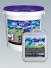
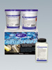
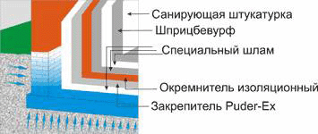
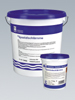
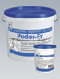
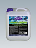

Внутренняя гидроизоляция
Дополнительная внутренняя гидроизоляция необходима, когда выполнение внешней гидроизоляции технически трудновыполнимо или экономически невыгодно:
- в старых строениях - при повреждении или отсутствии внешней гидроизоляции
- в новых строениях - при неправильной оценке водной нагрузки или ошибках при выполнении внешней гидроизоляции
- при перестройке сооружений, пристройке и т.д.
Основа, на которую наносится гидроизоляция, должна быть достаточно прочной, чтобы выдерживать ожидаемое давление воды.
Штукатурка, краска и другие разделительные слои должны быть удалены для получения прочной несущей поверхности с открытыми порами.
Старый, непрочный раствор должен быть удалён из швов на 2 см в глубину.
Установочные элементы должны быть удалены.
Внутренние стены и перегородки и т.д. должны быть отделены, чтобы выполнить сплошную внутреннюю гидроизоляцию в форме “ванны”.
Неплотные швы, выбоины и т. д. должны быть заполнены соответствующим раствором (например, Уплотнительным раствором)
В стыке Стена-Цоколь должна быть выполнена галтель (плинтус) из Уплотнительного раствора.
Проходки труб должны быть уплотнены эластичным герметиком.
В случае солевой нагрузки необходимо предварительно обработать стены Антисульфатом.
Нанесённая на пол гидроизоляция должна быть защищена стяжкой. Для предотвращения запотевания рекомендуется использовать Санирующие штукатурки и материал Щприцбевурф в качестве адгезионного слоя
Предлагается два способа выполнения внутренней гидроизоляции:
- Для выполнения долгосрочной внутренней гидроизоляции в условиях поступления воды без давления или под давлением использовать Специальную систему Аквастопп.
- При отсутствии водной нагрузки в момент нанесения и минимум в течение 48 часов после нанесения материала рекомендуется использовать Эластичный серый шлам К11.

Эластичный серый шлам К11K11 Flex Schlamme grau
2-компонентный минеральный гидроизоляционный шлам, обладающий очень хорошим сцеплением с минеральной поверхностью. Для внешней и внутренней гидроизоляции.
Улучшен в значительной степени добавлением полимерных материалов. Выдерживает нагрузку вскоре после нанесения. Устойчив к морской воде и низким температурам. Предназначен для надежной гидроизоляции подвалов, шахт и т.п. Используется в старых и новых постройках для защиты от воды под давлением, как с внешней, так и с внутренней стороны. Применяется при ремонтных работах в качестве замедлителя солеобразования, а также как основа под санирующую штукатурку. При использовании битуминозных гидроизоляционных материалов рекомендуются для защиты от воды под давлением, действующей в областях выступов со стороны основы. Минеральная основа не должна содержать гипс, разделительные слои должны быть удалены.
Испытан согласно инструкции немецкого Союза строительной химии.
Общенадзорный строительный сертификат.
Испытан согласно DVGW-W 270.
Компонент А: Giscode ZP1 Компонент В: Giscode D1
Расход: 2,5 - 3,0 кг/м.кв. (толщина слоя 1,5 - 1,8мм)
Хранение: в сухом и прохладном месте, беречь от мороза.
Упаковка: Комп. А - мешок 15 кг., Комп. В - канистра 5 кг.
AQUASTOPP

Специальная система АКВАСТОППSpezialabdichtungssystem AQUASTOPP
Наносится на внутренней стороне конструкции для долгосрочной защиты от наружной воды под давлением. Применяется для строительных конструкций, покрытых землей или водой. Компоненты системы: Специальный шлам, Закрепитель Puder-Ex, Окремнитель изоляционный.
- Не требуется спуск грунтовых вод
- Может применяться при наличии текущей под давлением воды
- Останавливает прорывы воды за секунды
- Испытана под давлением до 70 м водяного столба
Состоит из 5 слоёв: Специальный шлам, Закрепитель Puder-Ex, Окремнитель изоляционный, Специальный шлам, Специальный шлам
Суммарная толщина всех 5 слоёв не превышает 3мм.

Нанесённая на пол Специальная система AQUASTOPP должна быть защищена стяжкой. Для предотвращения запотевания рекомендуется использовать Санирующие штукатурки и материал Щприцбевурф в качестве адгезионного слоя.
Расход на квадратный метр:
Специальный шлам - ок.1,5 кг
Закрепитель Puder-Ex - ок.1,5 кг
Окремнитель изоляционный - ок.0,5 кг
Системные решения (файл PDF)
Специальная система внутренней гидроизоляции - Аквастопп

Специальный шламSpezialschlamme
Компонент Специальной системы Aquastopp. Минеральный шлам на основе специальных цементов.
Первый, четвёртый и пятый слои Системы. Наносится при помощи щётки.
Giscode ZP1
Расход: ок. 1,5 кг/м.кв. (0,5 кг/ м.кв. /слой)
Упаковка: ведро 5 кг, 15 кг

Закрепитель Пудер-ЭксPuder-Ex
Порошок / пудра для мгновенной остановки воды, а также Компонент Специальной системы Aquastopp. На основе специальных цементов. Второй слой Специальной системы. Закрепляет Специальный шлам и образует непроницаемый барьерный слой. Для герметизации протечек в подвалах, подземных гаражах, туннелях, плотинах, канализации, очистных сооружениях, бетонных трубах, шахтах лифтов и т. п., а также во всех местах, где гидроизоляция с внешней стороны невозможна.
Giscode ZP1
Расход: для ликвидации прорывов воды - по потребности,
в Специальной системе Aquastopp - ок. 1,5 кг/м.кв.
Упаковка: банка 1 кг, ведро 5 кг, 15 кг
Основные преимущества Пудер-Экс – водяная пробка или гидропломба.
- быстрое и надёжное устранение течей и прорывов воды в бетоне, кирпичной и каменной кладке в условиях постоянного притока воды.
- не требуется дополнительная расшивка водопроводящих трещин, либо расшивка в форме "ласточкиного хвоста", следовательно, нет необходимости в дополнительном оборудовании.
- нанесение сухого порошка осуществляется вручную при помощи гладкой не ребристой перчатки.
- мгновенно останавливает прорывы воды, время срабатывания примерно 10 секунд.

Окремнитель изоляционныйIsolier-Flussig
Компонент Специальной системы Aquastopp. Жидкое средство, не содержит растворителей. Третий слой Специальной системы. Наносится щёткой. Способствует дополнительной герметизации и надежному сцеплению Специальной системы AQUASTOPP с поверхностью путем окремнения строительной конструкции. Закупоривает поры основы.
Расход: - ок. 0, 5 кг/м.кв.
Упаковка: канистра 5 кг, 10 кг
 Упаковка Do-it-yourself
Упаковка Do-it-yourself Do-it-yourself pack
Комплект Специальной системы Aquastopp.
Состав: Специальный шлам -1 кг, Puder - Ex -1 кг, Окремнитель изоляционный -0,5 кг
Упаковка: 2,5 кг